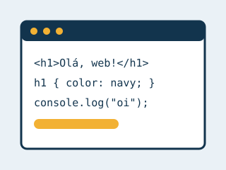

Gustavo Rodrigues
Sobre mim
Meu nome é Gustavo Rodrigues e meus amigos me chamam de Gustavo. Moro com minha família em São José dos Campos, São Paulo. Estou estudando desenvolvimento de software e adoro transformar ideias em programas que funcionam. Nas horas livres, gosto de jogar bola e passar tempo com as pessoas que amo assistindo séries.
São José dos Campos, Brasil
O Brasil é o maior país da América do Sul e abriga a maior parte da floresta amazônica. São José dos Campos fica no Vale do Paraíba, no interior de São Paulo, e é conhecida pela indústria aeroespacial e por centros de tecnologia e pesquisa.
O que já aprendi sobre web

- HTML: estrutura de página, elementos semânticos (header, nav, main, section, footer) e metadados no head.
- CSS: layout com Flexbox e Grid, variáveis, efeitos de hover e design responsivo.
- JavaScript: o atributo defer, o objeto Date e a propriedade lastModified para gerar conteúdo dinâmico.
- Ferramentas: Live Server, DevTools, Lighthouse, Git e GitHub.